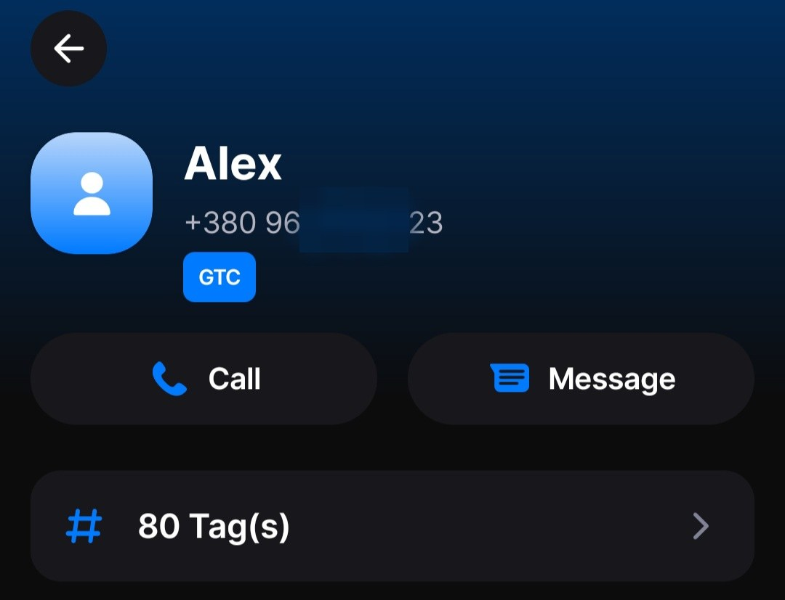
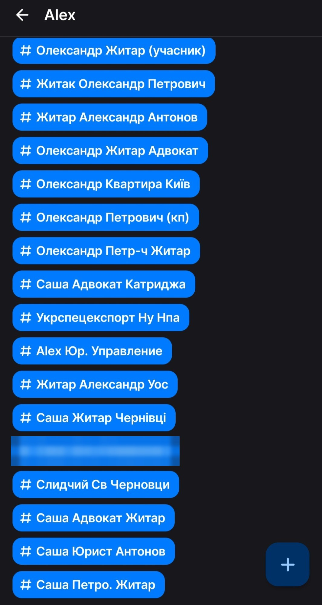
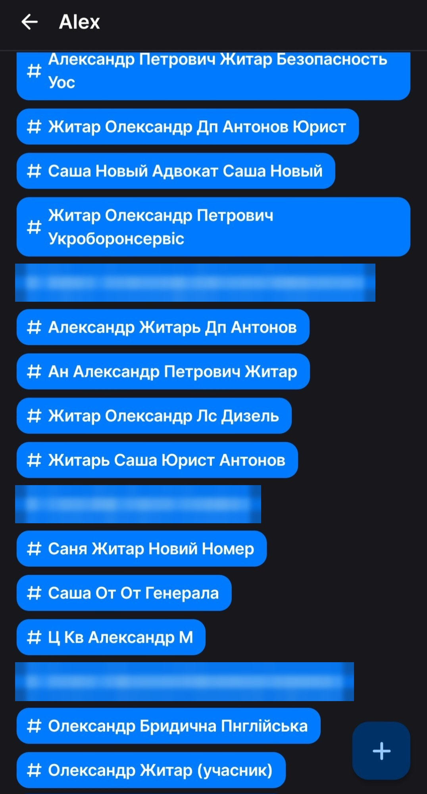
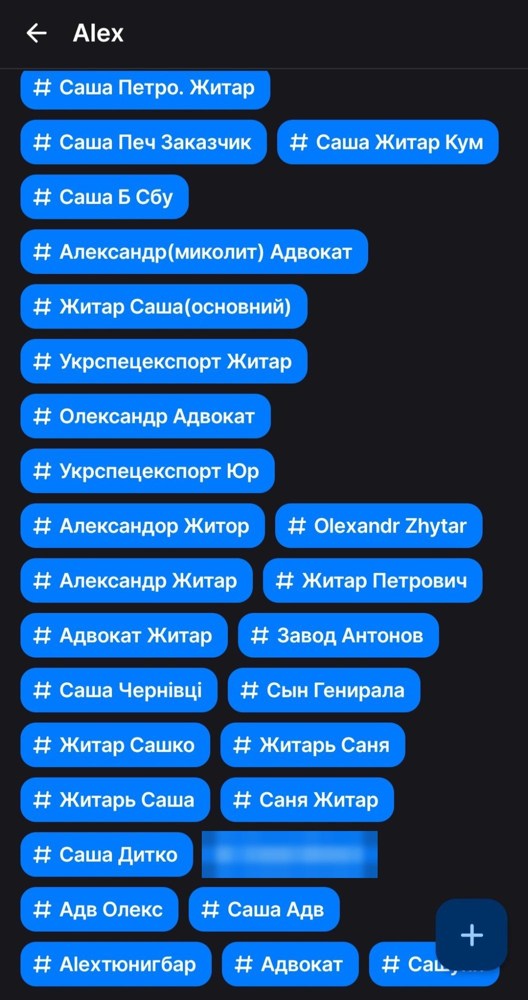

Знімки екрана застосунку GetContact, вересень 2026 року. GetContact показує, під якими іменами номер зберегли інші його користувачі, — усього 80 тегів. Серед них: «Сын Генирала», «Саша От От Генерала», «Слидчий Св Черновци», «Саша Б Сбу», «Александр Петрович Житар Безопасность Уос», «Житар Олександр Петрович Укроборонсервіс», «Укрспецекспорт Житар».
Цей матеріал — джерело до статті про декларації Антона Ковальського: родина Ковальського з вересня 2023 року орендує квартиру в Чернівцях у Олександра Петровича Житаря.



